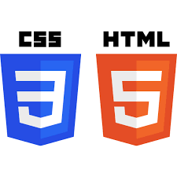
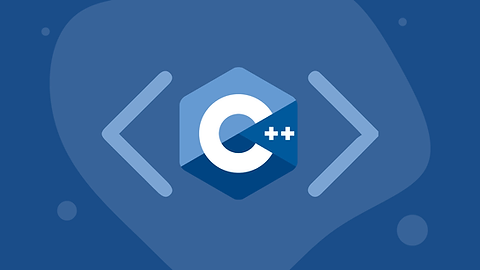

Python
A linguagem que mais estudei no 1º período. Foi também a linguagem usada no meu primeiro projeto CRUD, como citado na seção de Projetos.

JavaScript
Linguagem utilizada para adicionar funcionalidades ao site. Foi a primeira linguagem pela qual obtive um certificado: JavaScript Essentials 1 da Cisco.

CSS/HTML
Linguagens aprendidas na disciplina de Introdução à Computação, utilizadas na criação deste site.

C++
Linguagem utilizada na disciplina de Sistemas Digitais, aprendida para comunicação com Arduino.